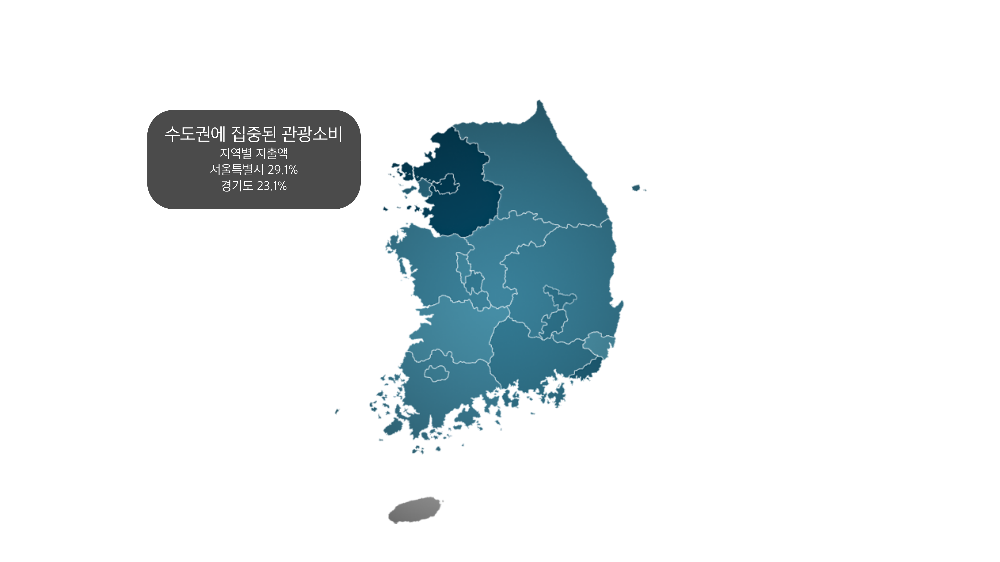

우리가 자체 진행한 설문조사에 따르면,
20~30대 응답자 64.5%가 ‘해외여행’을 선호했습니다.

해외 여행 선호자가 많아
사람들은 국내 여행을 안가는 현실입니다.
우리가 자체 진행한 설문조사에 따르면,
20~30대 응답자 64.5%가 ‘해외여행’을 선호했습니다.
해외 여행 선호자가 많아
사람들은 국내 여행을 안가는 현실입니다.
문화빅데이터플랫폼의
국내외 여행 동향 데이터에 따르면
저비용 단기여행 선호층 중심으로 꾸준히 회복중이며 코로나 이후 최고치를 언어여 갱신하고 있습니다.
여행비 지출과 계획률 모두 정체되고 있어 침체기가 지속될 것으로 예상됩니다.
가장 큰 침체 요인: 소비 위축 & 동기부여 부족
한국관광데이터랩의 데이터를 확인해보면
그렇다면
자체 설문조사 결과:
국내여행 불만족 선택이유
1. 국내여행은 생각보다 비싸고 가성비가 낮다는 의견이 많았습니다.
2. 볼거리 부족이나 교통의 불편함 등 접근성과 이동 과정에서의 불만이 자주 언급되었습니다.
3. 시설의 낙후, 혼잡함, 청결문제 등으로 인해 재방문 의사가 낮은 경우도 많았습니다.
자체 설문조사 결과
: 국내여행의 ________ 점이 보완 되면 갈 것 같다
이미 많은 사람이 아는 여행지보다
사람들이 여행지로 잘 인식하지 않는 지역에 체험과 관광시설이 더해지고
적극적으로 홍보된다면 분명 국내 관광이 더 활기를 띨 수 있을 것입니다.
그동안 국내 여행이 아쉬웠던 이유는
나에게 딱 맞는 여행지를 찾기 어려웠고
기존 관광이 유명한 몇몇 지역에만 집중되어 있었기 때문일지도 모릅니다.
‘대한민국은 영업중’의 AI 기반 시뮬레이션은
개인취향을 분석해 지역 중에서 나와 잘 맞는 다양한 국내 여행지를 찾아줍니다.
그럼, 내 취향에 맞는 여행지는 어디일까요?
“국내 여행은 뻔하고 재미없다.”
과연 진짜일까요?
그동안 우리는 취향에 맞는 여행지를 몰랐던 것은 아닐까요?
만약, 새로운 대한민국을 발견한다면,
당신은 어디로 떠나고 싶나요?
당신의 여행이, 한국 관광의 미래를 바꿀 수도 있으니까